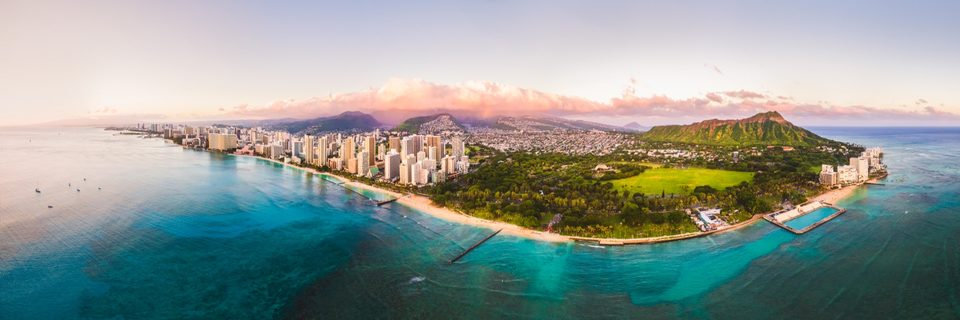
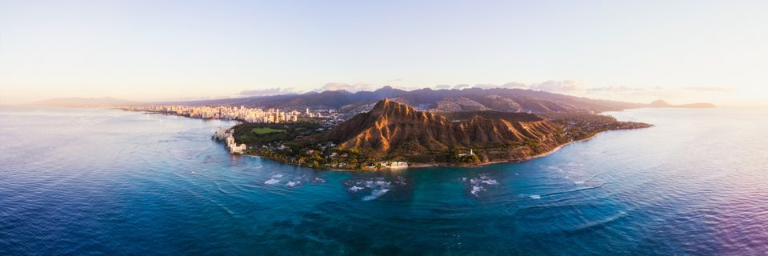
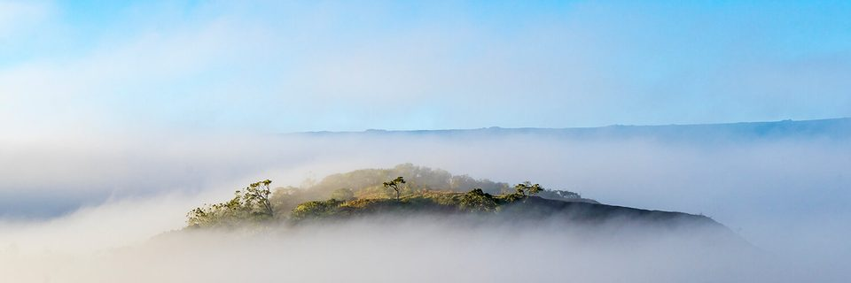
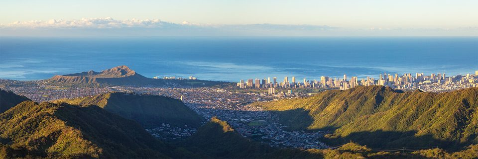
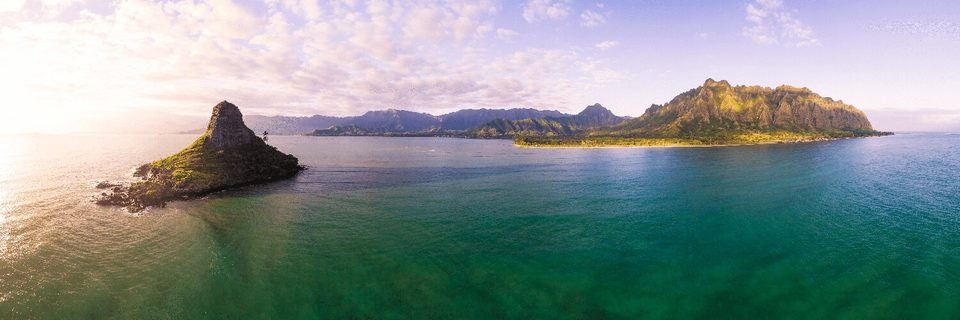
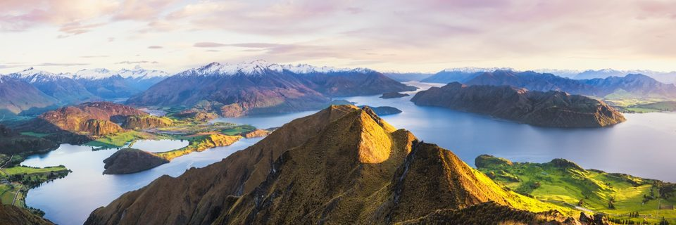

Panoramic Hawaiʻi prints
Stitched from a dozen or more frames, these are made to run long across a wall: above a sofa, a bed or a long hallway.
7 prints







Stitched from a dozen or more frames, these are made to run long across a wall: above a sofa, a bed or a long hallway.
7 prints





